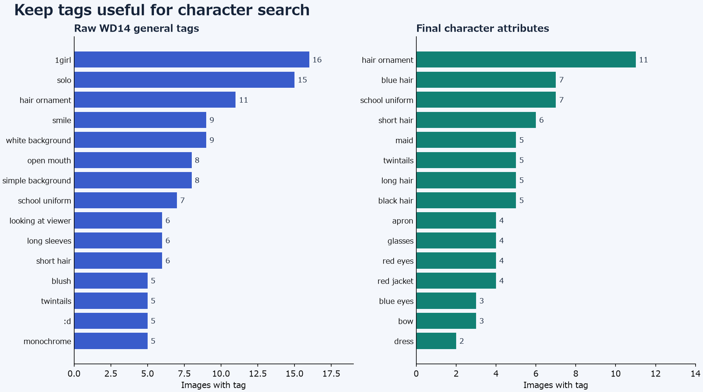

01 / キャラクター検索・データクレンジング
二次元キャラクターマルチモーダル検索
ライセンス確認済みのキャラクターイラストを自動収集し、破損・低解像度・近似重複を排除。日英テキスト検索と画像検索の両方に対応し、キャラクター属性の重なりで検索結果を再順位付けします。
- 収集 → 重複排除後
- 17 → 16
- Recall@5
- 75% → 100%
WD14 の背景・構図ノイズを除外して髪色・瞳色・衣装タグを抽出し、0.75 × SigLIP 2 + 0.25 × 属性一致率で再順位付け。該当4件を含む検索で Recall@5 を 75% → 100% に改善しました。
Python · pHash · WD14 ONNX · SigLIP 2 · Faiss
GitHub で実装を見る →

